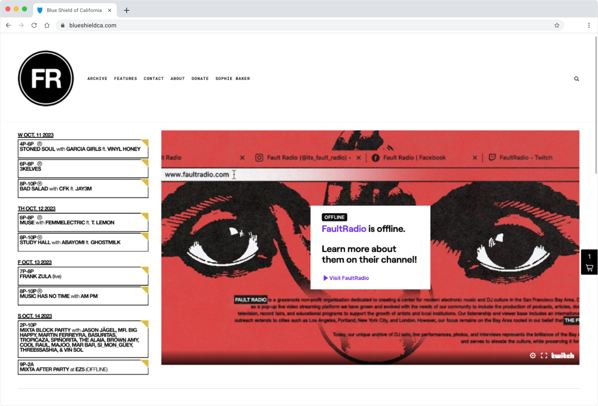
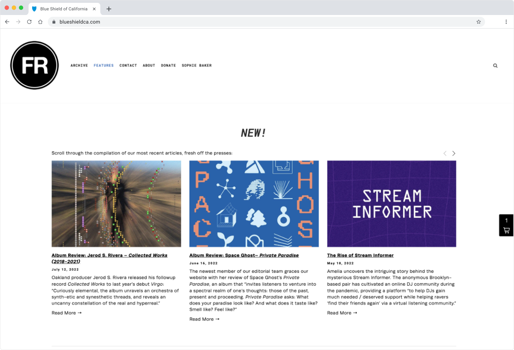
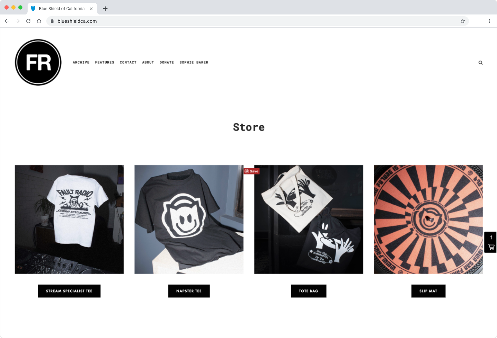
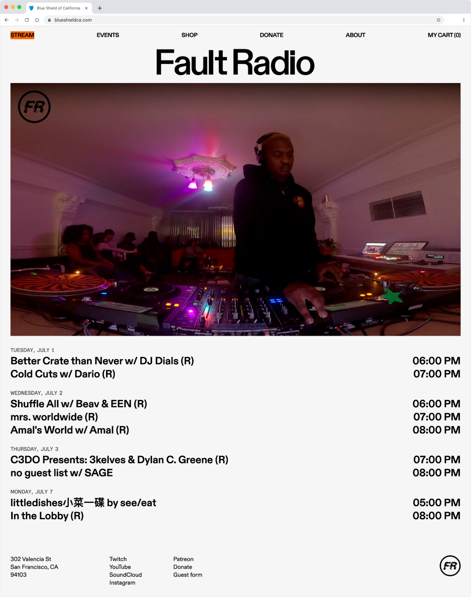
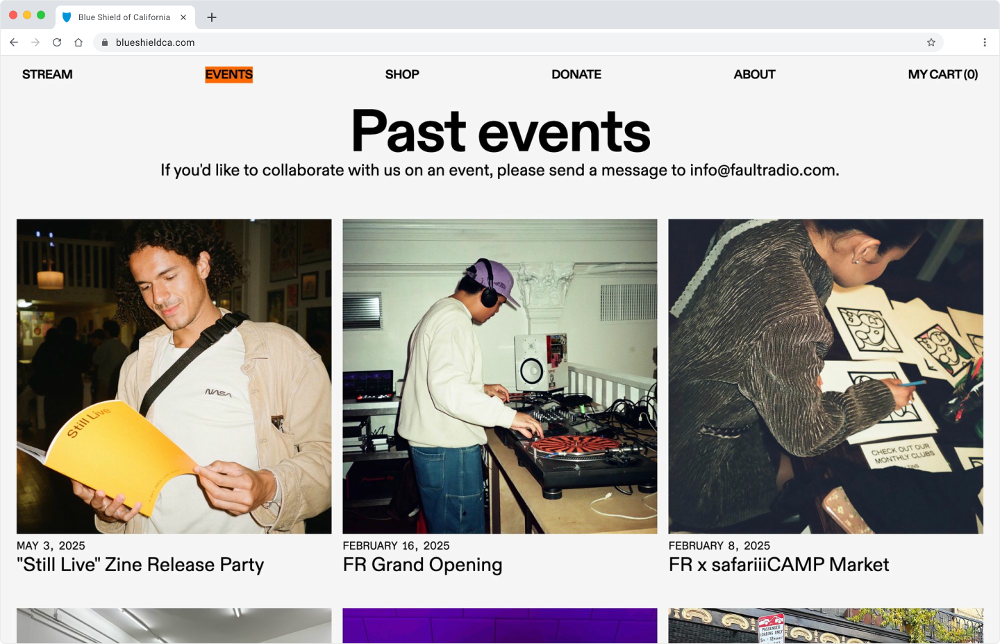
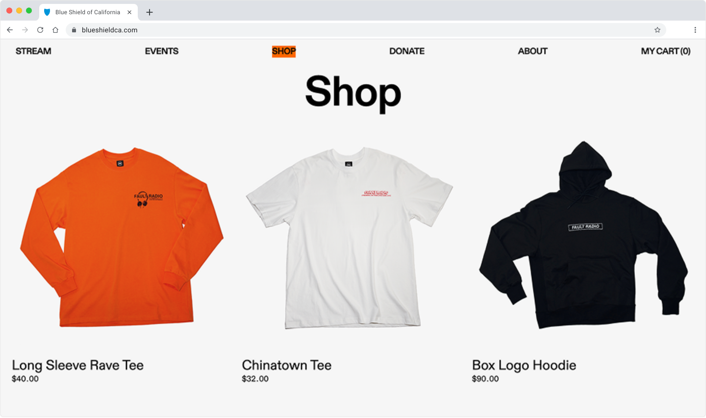

2024
Website Redesign, Fault Radio
Fault Radio is an internet radio station that hosts a regular streaming program and special events to champion the growth and visibility of up-and-coming local artists. Fault Radio moved to a new location in the mission district of the bay area in the summer of 2024. The move to a new location prompted a redesign of their website.
I would like to callout that I made strategic use of AI to help bridge knowledge gaps during development, especially when working with the three APIs integrated into this website.
Project purpose
The old website was hosted on Squarespace with the shop hosted on a separate Shopify site. The calendar was a static graphic that had to be updated manually each week or whenever updates to the schedule were made, so it was often inaccurate. Whenever there was no active Twitch stream, no other content was provided to replace that space.
Measurable Impact
The updated design and build of the website requires very little maintenance to provide up-to-date content to listeners. Admin tasks no longer require team members to have web design or development experience. This means the Fault Radio team is much more easily able to provide value to it's listeners through the site.
- 866 active users per month. Significant growth from 0 active users per month prior to the redesign.
- "I think the schedule live is huge. People (artists) like seeing themselves on the site." Fault Radio team member
- "The website looks great! So happy to finally see it up." Fault Radio team member
Old website

Old home

Old CMS list

Old shop
Redesign goals
The website redesign centered around providing more value to the station's listeners and streamlining the admin experience for Fault Radio's team. This could be achieved through:
- Cohesive look and feel that leverages a digital interpretation of the current brand guide
- 24/7 music content on site (live or archival)
- Accurate event/programming calendar
- Online shop that doesn't take users away from the main site
New website
The new website features station content 24/7. If there is no live twitch stream detected by the Twitch api, the site pulls from archived sets hosted on Youtube.
Using the Google Calendar api, the site lists all calendar events 30 days from today's date. Whenever updates are made to the google calendar, those changes are immediately reflected upon page refresh.

New home
The CMS list page is populated using an intuitive authoring dialogue so anyone of Fault Radio's team can easily make updates with little to no web design experience.

New CMS list
The shop page is linked to the station's Shopify account using Shopify's storefront cart api. This strategy allowed for the most css customization, so the shop has a unified look and feel with the rest of the site while the admin is almost completely handled through the station's Shopify account.

New shop